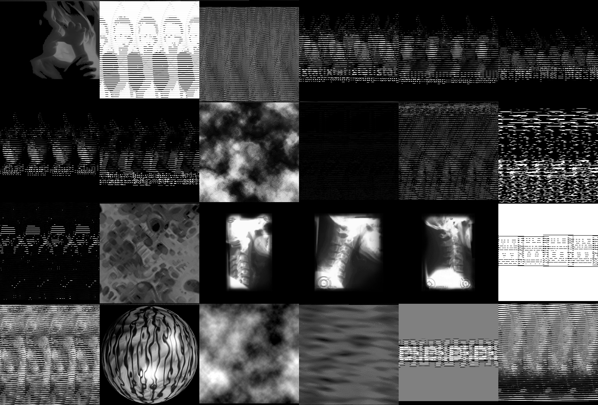
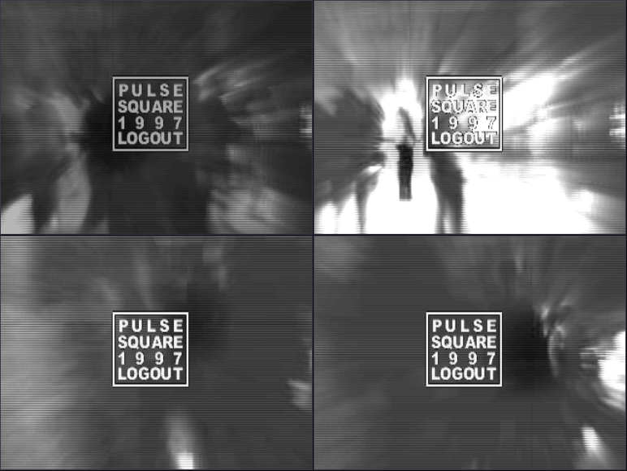

The scene list below comes from the file names the code loads
(strings 0x101000-0x102500) and the order of the scene calls in
main; the effects themselves are not analysed yet.
Canyon fly-through (canyon.fpl/.fbp/.fad), molecules
(caffeine, ecstasy, c6h12o5,
dna .mol), pinblob, cubes
(cubes.fpl, rayes, back2), planet
(plnt.*, sunflare), brain / x-ray vertebrae
(senseof, braino2, dunetex),
tunnel (tunnel.gst/.fad, krol1..3), bjork
scene (cr1..5, palflow,
*bulbe/*spike.dat), plasma, title/logo, people
(people.lzw), the "secret zebou" picture
(zebou.lzw). Music: SQUADEMO.XM, 263 s, 56
orders. The code reads the music position as order*64+row, so every
scene is a function of music position and a 60 Hz tick counter.

Last scene (0x390ab, from 3:38): 117 grey DCT frames
from PEOPLE.LZW (web/js/lzw.js +
dct.js) are cross-faded with a sine-modulated brightness
(people.js), the 160x120 window is doubled to 320x240, then
a radial zoom blur (blur.js, guest
0x2a8e8 + the generated code at 0x58000)
smears each pixel along a bilinear sample taken toward a centre that two
sums of three sines wander around, and the PULSE / SQUARE / 1997 /
LOGOUT box from logo.raw (read from the original
SQUARE.PAK in the browser) is stamped on top. Blend,
upsample, blur and logo are bit-exact against the original run under
Unicorn; the frame position and the palette fade-in are modelled. See
re/NOTES.md (Session 5).
The opening portrait scene (0x29a81, 0:00-0:21,
shown 320x480 on a 4:3 screen) and the dune scene
(0x338a5, 3:28-3:32: the texture dunetex.raw scaled by a double, a ramp,
noise 0x1e27a and the radial blur 0x2a8e8, palette crossfade by the ISR)
are not ported to hand-written effects: the player runs their original
code translated to JS (web/js/sqr.gen.mjs) frame by frame,
on a 43-51 KB entry snapshot and the original SQUARE.PAK. The result
matches the original's frames bit for bit (749 of 752 flips; the DAC
palette writes are identical) but it is not an understanding of the
effect: for the portrait scene the per-pixel loop 0x29ea8
(dst[i] = lut[(((a[i]<<2)+b[i])<<8)+c[i]] with
a random row offset, then the line drawer 0x2c25b and the blend 0x31c33
for the title) was what cost the 70-90 ms per frame in JS; it, the
4-neighbour blur and the blend are now hand-written JS patches
(re/patches.env), 8 ms per frame.